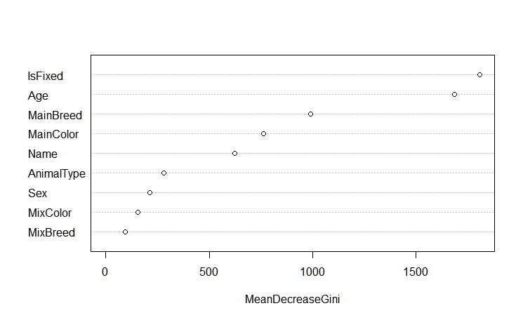

Background
This webpage documents my work with regards to the Shelter Animal Outcomes Kaggle competition. My main motivitaion for this project was to learn to use Tableau, the dplyr package, and version control to do data analysis. In past projects my data analysis workflow had been a bunch of cowboy code in one huge script. This setup was a nightmare to maintain and after a certain point it was impossible to change an assumption I had made in the beginning of the workflow. For this project I strove to make sure my code was modular and clean.
The following is the introduction to the competition provided by Kaggle.
The data provided for the competition was split between a training set and a test set. The training set identifies the outcome for each animal while the test set does not. Competitors are tasked with building a predictive model with the training set and then applying the model to the test set. Kaggle scores the performance of the model and then posts the score on the leaderboard with the other competitors submissions.
Data Munging
Number of Training Observations: 26,729
Number of Test Observations: 11,456
Independant Variable Definitions
Name - Lists the name of the animal.
DateTime - No information is provided as to what the date/time signifies but for my analysis I assumed it was the date/time of the outcome. Going off this assumption I did not include this variable in my model because we don't have any knowledge of when an outcome will happen before it happens.
AnimalType - Lists whether the animal is a cat or dog.
SexuponOutcome - Describes whether the animal is male/female and if it has been neutured/spayed. An argument can be made that the neutured/spayed information should not be used in the model since this information was documented when the outcome occurs. We don't know when the animal had been fixed and how that affected the outcome. That being said I chose to include the information in my analysis to see if there were any interesting patterns regarding this information.
AgeuponOutcome - Age of the animal when the outcome event happened. The same argument can be made with AgeuponOutcome as the spayed/neutured information. I assumed that the change in age of the animal while in the shelter was negligable and therefore included this variable.
Breed - Lists the breed of the animal.
Color - Lists the color of the animal.
Dependant Variable Definitions
OutcomeType - Describes what happened to the animal. Five possible values: Return to Owner, Euthanasia, Died, Transfer, Adoption.
OutcomeSubtype - Gives further information about the type of outcome that occured. The competition only specified to predict type of outcome and not the subtype. For simplicity I chose to drop this variable.
Variable Transformations
The code that performs the following transformations can be found in the Clean.R file.
Name - Instead of using the acutal name of the animal I changed the variable to indicate whether the animal had a name or not.
SexuponOutcome - I pulled out the spayed/neutered information into its own variable called IsFixed, where a value of Yes denotes that the animal has been spayed/neutered while No denotes the animal has been left intact. I also pulled out the male/female information into its own variable called Sex that has the values of Male and Female. There was only one NA value within the SexuponOutcome variable. I included this observation with the other unknown obeservations.
AgeuponOutcome - The AgeuponOutcome was originally given in terms of days, weeks, months, and years. I modified the variable to be measured in days and changed the name to be Age. Any animals that did not have an age were given an age of zero, within the training data set there were 18 animals with no age. Note, there were also 22 animals with an age of 0 years.
Breed - In total there were 1,380 unique breeds listed in the data set. To reduce the number of breeds to a more managable size I made two new variables. The first is called MixBreed which describes whether the animal is a mix of two or more breeds. The other variable is called MainBreed which was created by taking the first breed listed in the mix. For example, "Cardigan Welsh Corgi/Australian Cattle Dog" would be turned into "Cardigan Welsh Corgi". The transformation resulted in 68 unique breeds.
Color - This was another variable that contained a lot of unique types. There were 366 different types of colors listed in the data set. To reduce this number down I used the same method as I did for Breed. I created a new variable that described whether the color was mixed called MixColor. I also created a variable called MainColor that was created in the same way as MainBreed. The transformation resulted in 26 unique colors
Exploratory Data Analysis
The following graphic was made using Tableau Public. You are encourage to explore the different plots to see what patterns you can discover. Notice that even though I did not inlcude the date/time variable in the predictive model I included it in some of the plots. Viewing date/time in this way allows you to see any historical trends in the data. You can see that there is a seasonal trend in outcomes. There are many more outcomes during the summer months than the winter months. If you further breakdown the data you will notice that this trend is solely due to the outcomes from cats.
Some other interesting things to note. Dogs are more likely to be returned to their owner while cats are more likely to die. The most likely outcome for a cat is to be transfered while dogs are most likely to be adopted. An observation that will shock no one, people tend to adopt younger animals, especailly kittens.

Modeling Procedure and Results
For this problem I built 5 different predictive models. They are listed below along with their overall accuracy on the hold out sample.
Naive Bayes - 0.6034
Multinomial Logistic - 0.622
Random Forest - 0.631
Neural Net (2 Layers of 20 nodes each) - 0.6325
Gradient Boosting Machine (GBM) - 0.635
Since the GBM performed the best on the hold out sample I used it as my submission to the Kaggle competition. It gives a 58% increase in accuracy over just guessing the most common outcome. Two months before the competition closes my submission placed in the 50th percentile. To gain insight into the behavior of the GBM model I created the following table that displays the true positive rate and the true negative rate for each outcome. Notice that the model has trouble identifying the outcomes of Died and Euthanasia which isn't too surprising since those outcomes have the lowest occurances in the data set.
| Adoption | Died | Euthanasia | Return to Owner | Transfer | |
| True Positve Rate | 0.87 | 0 | 0.04 | 0.35 | 0.65 |
| True Negative Rate | 0.66 | 1.0 | 1.0 | 0.91 | 0.87 |
Although the GBM provides the best predictive performance on the out of sample data it doesn't offer much in terms of interprebality. To gain a better understanding between the independant variables and the outcomes you can use the coefficients of the logistic model. For the sake of brevity I dropped the variables relating to color and breed. If I was doing a complete analysis I would include this information. Below is a table of the coefficients of the model.
| Intercept | Name Yes | AnimalType Dog | Age | Sex Male | Sex Unknown | IsFixed Unknown | IsFixed Yes | |
| Died | -0.71 | -0.88 | -0.67 | 0.00 | 0.52 | 6.2 | 6.2 | -4.3 |
| Euthanasia | 0.58 | -1.1 | 0.23 | 0.00 | 0.43 | 6.1 | 6.1 | -3.9 |
| Return to Owner | -2.1 | 1.7 | 1.5 | 0.00 | 0.28 | 6.1 | 6.1 | -2.5 |
| Transfer | 2.7 | -0.7 | -0.15 | 0.00 | 0.15 | 6.2 | 6.2 | -3.5 |
Notice that there are only 4 outcomes displayed in the table. The reason for this is that the fifth outcome (Adoption) is used as a baseline for the other outcomes. The coefficients of the model describe how the probability of the specified outcome changes as it relates to the outcome of Adoption when the independant variable is altered. For example, the coefficient for the AnimalType-Dog indicator variable is -.67 for the outcome of Died. Since the coefficient is negative this means that the probablity of dying decreases if the animal is a dog. Conversely, if a coefficient is positive then the probability of that outcome occuring increases relative to Adoption when the independant variable is true (or increases in the case of a numerical variable). You can perform some simple algebra on the coefficients to determine the acutal change in probablity when the independant variable changes, but sometimes it's enough to know how the probability will change. Another way to determine how the independant variables affect a specific outcome is to transform the dependant variable into a binary outcome. I did this for the outcome of Euthanasia. After the transformation the OutcomeType variable is made of just two outcomes, either Euthanasia or NotEuthanasia. The resulting model coefficients are as follows.
| Intercept | Name Yes | AnimalType Dog | Age | Sex Male | Sex Unknown | IsFixed Unknown | IsFixed Yes | |
| Euthanasia | -2.2 | -0.84 | 0.18 | 0.00 | 0.24 | -0.13 | -0.13 | -1.5 |
Another way to determine variable importance is to use the random forest model. R tracks the predicitve performance of independant variables during the model building process. Once finished, it gives you a plot that shows which variables were most important for prediction. The plot below shows which of the variables used in the animal shleter data is most important. The larger the MeanDecreaseGini the better the variable is for prediction. Notice that Age is listed as the second most useful variable but the coefficient for Age in the multinomial model was esstientailly 0, which suggests that the variable is not important. Remember that Age was measured in days and therefore the coefficient is related to the change in probability per day. For interpretation reasons it would probably be more useful to measure Age in years so that the coefficient becomes more meaningful.
Conditonal Relationships versus Causul Relationships
A quick note on conditional relationships versus causul relationships. From the summaries of the models you can see that if an animal is fixed then their chances of being adopted increase. Since this fact is coming from the models it represents a conditional relationship. Said another way, the probability of adoption given the animal has been fixed is higher then the probability of being adopted in general. But this does not necessarily mean there is a causul relationship between getting fixed and being adopted. A superficial analysis would lead you to believe that in order to increase adoptions you should fix animals beforehand. It does seem very reasonable that if an animal has already been fixed that people are more likely to adopt them since this reduces the cost of ownership. Although, I can imagine a scenario where midway through the data collection process the animal shelter required that before someone adopts an animal the animal must be fixed first. A situation such as this would show a relationship between getting fixed and being adopted but you couldn't necessarily say that fixing an animal increases their chances of being adopted. Further analysis on how the data was collected and how the animal shelter is run is needed before any conclusive casual relationships can be stated.